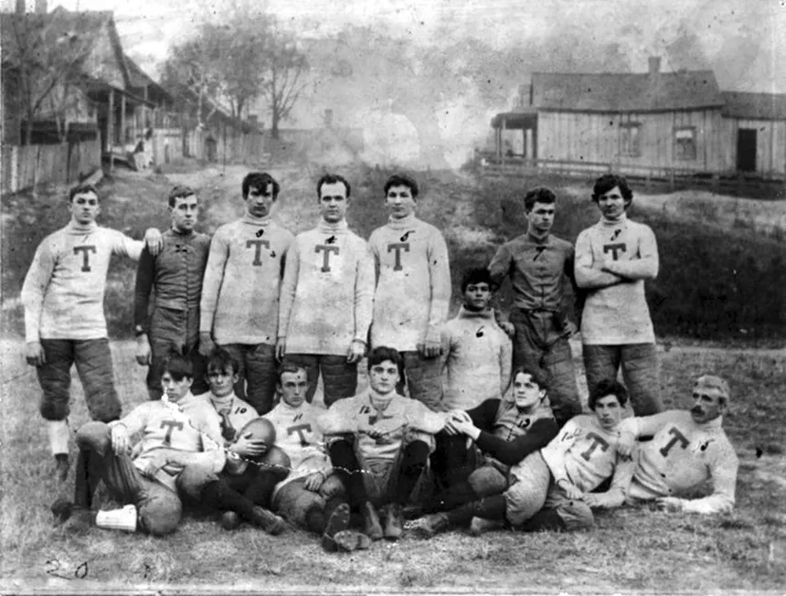
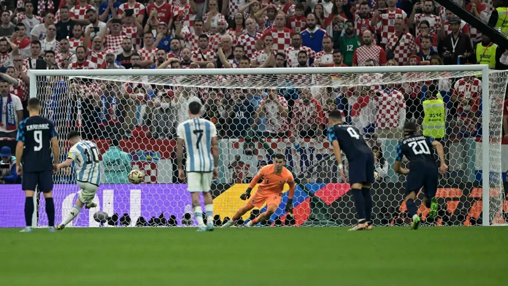
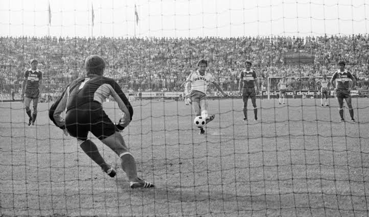
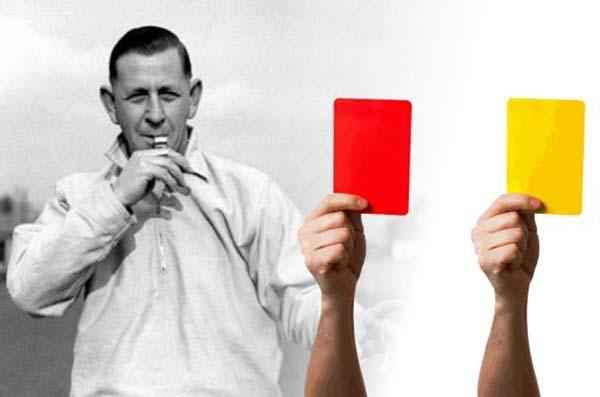
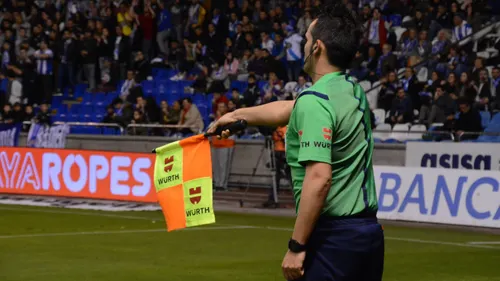
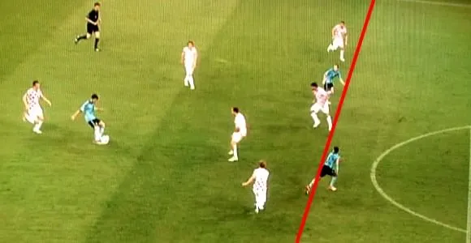
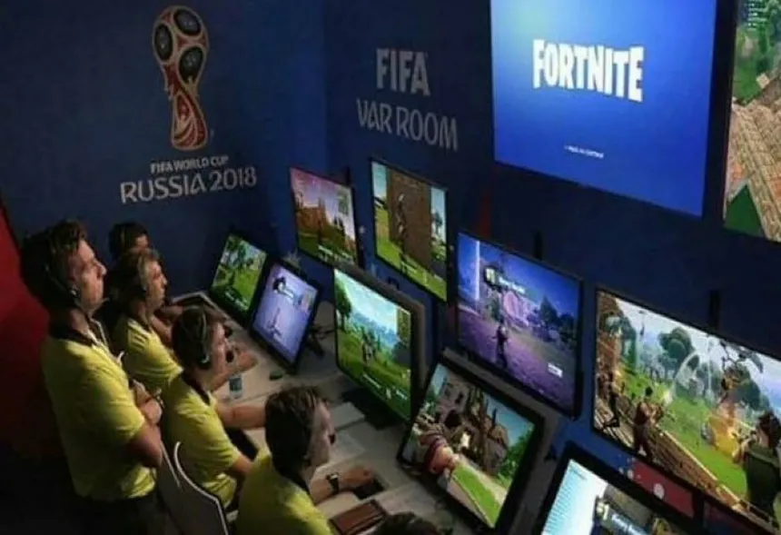
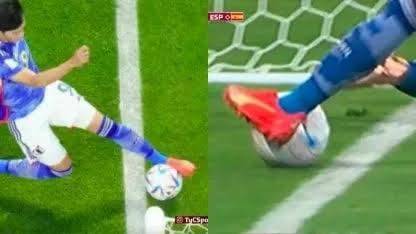
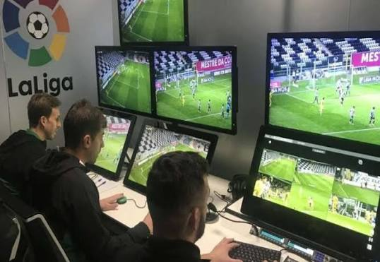

En 1863 se establecieron las primeras reglas oficiales del fútbol moderno en Inglaterra. Durante esta etapa se organizaron las normas básicas del juego y se diferenciaron del rugby. En 1871 se reconoció oficialmente la posición del guardameta y en 1891 se introdujeron los tiros penales.



Durante el siglo XX se realizaron cambios importantes para mejorar el juego. En 1925 se modificó la regla del fuera de juego para favorecer los ataques y en 1970 se introdujeron las tarjetas amarillas y rojas en la Copa Mundial. En 1992 se prohibió que el portero tomara con las manos un pase deliberado con el pie de un compañero.



En el siglo XXI, las reglas han incorporado avances tecnológicos para ayudar a los árbitros. La tecnología de la línea de gol permite comprobar si el balón cruzó completamente la línea, mientras que el VAR ayuda a revisar determinadas jugadas importantes. Además, se han actualizado normas relacionadas con las sustituciones, las manos y las reanudaciones del juego para mejorar la precisión de las decisiones y la continuidad de los partidos.


